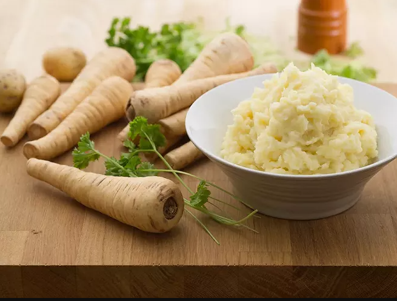

Purée de panais

Description
Voici la meilleure recette de purée de panais
Ingrédients
- 1kg de panais, pelés et tranchés
- 60ml de beurre
- 60ml de crème 45%
- Sel et poivre
Etapes pour le recette
- Dans une casserole d'eau bouillante salée, cuire les panais environ 15 minutes ou jusqu'à ce qu'ils soient tendres. Égoutter.
- Au robot, réduire les panais en purée lisse avec le beurre et la crème. Saler et poivrer.
- Servir avec le rôti de boeuf et persillade à la canneberge séchée.
Home page